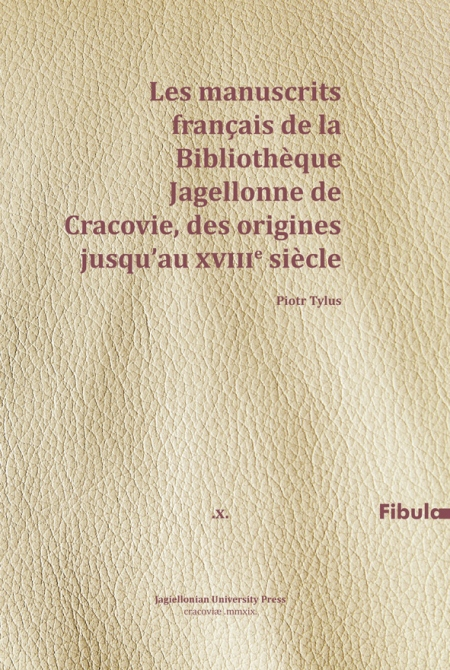

Project (in Polish)
A research project funded by the Polish Ministry of Science and Higher Education (National Programme for the Development of Humanities), 2014-2019

A research project funded by the Polish Ministry of Science and Higher Education (National Programme for the Development of Humanities), 2014-2019

OBJECTIVES (in Polish):
Cel naukowy projektu to pełne opracowanie rękopisów romańskich (francuskich i włoskich) znajdujących się w zbiorach Biblioteki Jagiellońskiej, od średniowiecza do końca XVIII wieku, oraz częściowe edycje tekstów zawartych w rękopisach.
Kolekcja rękopisów romańskich w zbiorach Biblioteki Jagiellońskiej jest wyraźnym odbiciem ważnej roli, jaką kultura romańska (francuska i włoska) odegrała w tworzeniu kultury polskiej. Głównie język francuski, lecz także język włoski były na przestrzeni wieków językami kultury europejskiej. Przez to, obywatele Rzeczypospolitej zarówno pisali w tych językach, jak i nabywali za granicą rękopisy, które wprowadzali w polski obieg kulturowy. W kolekcji odbijają się wielowiekowe wpływy kultury romańskiej w Polsce, widoczne w Krakowie już od średniowiecza, kiedy przyszli profesorowie Uniwersytetu Jagiellońskiego pobierali nauki na Uniwersytetach w Paryżu, Bolonii lub Padwie. Wpływy włoskie nieco osłabły po XVI wieku, ale za to zwiększyły się wpływy francuskie, dobrze udokumentowane przez liczne teksty w kolekcji. Praca nad częściowymi edycjami wybranych tekstów powierzona została zespołowi doktorantów pod nadzorem doświadczonych badaczy.
Naukowe opisy poszczególnych rękopisów i zarys historyczny kontaktów francusko-polskich i włosko-polskich na bazie kolekcji Biblioteki Jagiellońskiej zostały przygotowane przez doświadczonych badaczy, prof. dr. hab. Piotra Tylusa i prof. dr. hab. Romana Sosnowskiego, którzy kierują projektem. Aby to ważne dziedzictwo należycie zostało docenione w Europie i włączone do badań nad dziedzictwem rękopiśmiennym we Włoszech i we Francji, opracowanie naukowe kolekcji rękopisów romańskich w BJ powstało w językach francuskim i włoskim. Rezultatem są dwie monografie (osobno dla rękopisów francuskich i włoskich) oraz ta witryna internetowa, gdzie są również edycje częściowe wybranych tekstów przygotowane przez zespół młodych badaczy pod kierunkiem prof. Tylusa i prof. Sosnowskiego.
 
A research project funded by the Polish Ministry of Science and Higher Education (National Programme for the Development of Humanities), 2014-2019
NOTES CONCERNING ITALIAN MANUSCRIPTS (in Italian):
Cultura e lingua italiana come emergono dai manoscritti in lingua italiana presenti nella Biblioteca Jagellonica (alcune osservazioni generali)
(Roman Sosnowski)
Manoscritti romanzi della Biblioteca Jagellonica
La collezione dei manoscritti romanzi della Biblioteca Jagellonica, sebbene non costituisca un fondo separato, riflette l’importanza della cultura romanza (francese e italiana) nel processo formativo della cultura polacca. Il francese, in primo luogo, e l’italiano nel corso dei secoli sono state lingue di cultura in Europa. Sulla base di questa costatazione possiamo aspettarci due principali scenari: i cittadini polacchi usavano il francese e l’italiano nella loro produzione scritta e (secondo scenario) compravano all’estero (Francia e Italia, ma non solo) manoscritti che avevano una successiva circolazione sul territorio polacco, prevalentemente nell’ambito cortigiano e/o accademico. I manoscritti, risultati dei due scenari maggioritari descritti, spesso confluivano grazie a donazioni, lasciti ecc. nella più importante biblioteca polacca, cioè nella Biblioteca Jagellonica. L’insieme dei manoscritti romanzi che troviamo nella Biblioteca è una diretta testimonianza del forte, plurisecolare influsso della cultura romanza in Polonia, visibile a Cracovia a partire dal Medioevo. I futuri professori dell’Università Jagellonica, a completamento del percorso di studio, sceglievano spesso Bologna, Padova o Parigi rafforzando così i legami accademici tra la Polonia e i paesi romanzi. Non da meno sono i rapporti dinastici, prima tra i Jagelloni e l’Italia e, successivamente, tra i diversi re della Polonia e la Francia (p.es. Henri de Valois, Jan Sobieski, Stanisław Leszczyński).
Manoscritti italiani e la conoscenza della lingua italiana in Polonia dal XVI al XVIII secolo (alcune osservazioni)
La presenza dell’italiano nei fondi manoscritti della più importante biblioteca universitaria polacca, come emerge dalle ricerche, è abbastanza significativa sebbene non permetta di formulare giudizi univoci sulla presenza e sull’importanza della lingua italiana in Polonia. Per lo più i manoscritti italiani sono libri di provenienza italiana oppure scritti da abitanti della penisola appenninica che vivevano in Polonia. La loro circolazione era piuttosto limitata, spesso si trattava degli stessi ambienti italiani, con poche eccezioni di circolazione negli ambienti cortigiani e accademici. Tali manoscritti, grazie a donazioni, lasciti ecc. finivano poi nella più importante biblioteca polacca, cioè nella Biblioteca Jagellonica assieme ad altri libri e manoscritti reperiti da privati per i loro interessi scientifici e culturali. A ciò si sono aggiunti libri manoscritti di circolazione conventuale, arrivati in biblioteca solo di recente.
Sulla base dei manoscritti italiani presenti nella Biblioteca Jagellonica sarebbe difficile fare una sintesi efficae dei contatti italo-polacchi. Per quella come per delle analisi approfondite sull’argomento esistoni varie fonti: la letteratura scientifica sulla storia dei contatti italo-polacchi è vastissima e variegata. Nella riuscitissima sintesi della presenza degli italiani in Polonia nei secoli XVI e XVII Wojciech Tygielski[1] riannoda i vari fili dei contatti italo-polacchi in campi anche diversi tra di loro: storia politica ed economica, storia dei rapporti culturali, letteratura e influssi italiani, arte e architettura. Dove non arrivano le sue considerazioni e acutissime osservazioni, fornisce riferimenti bibliografici da cui partire per approfondire l’argomento. La storia di contatti più strettamente linguistici è stata negli ultimi anni tracciata nei libri di Stanisław Widłak[2], di Maria Borejszo[3], nei contributi di Elżbieta Jamrozik[4] e Luca Palmarini[5]. Sul versante italiano negli ultimi anni la bibliografia si è arricchita di studi di Rita Mazzei[6] e di vari contributi di polonisti italiani e italianisti polacchi, capaci di reinterpretare e approfondire ‘l’italianismo’ in chiave comparatistica (Andrea Ceccherelli, Piotr Salwa, Mirosław Lenart, Maria Maślanka-Soro, Alina Nowicka-Jeżowa[7], Luigi Marinelli[8]). I legami culturali e, soprattutto, letterari sono stati tracciati nell’ormai classico libro di Tadeusz Ulewicz Iter Romano-Italicum Polonorum[9] che copre il medioevo e il rinascimento e il più recente volume di Jadwiga Miszalska[10] che, con una quantità impressionante di esempi racconta le traduzioni di letteratura italiana fatte in Polonia fino alla fine del XVIII secolo. Senza citare le varie sintesi storiche precedenti, quelle parziali e quelle generali che per alcuni aspetti rimangono ancora un punto di riferimento per lo studio dei contatti italo-polacchi (cito solo alcuni nomi di storici: Jan Ptaśnik[11], Henryk Barycz[12], Danuta Quirini-Popławska[13], Karolina Targosz[14]).
Conoscenza dell’italiano in Polonia dal XVI al XVIII secolo
Mi sembra doveroso ritornare su una questione di prim’ordine che riguarda la conoscenza dell’italiano da parte delle élites polacche. Sarà senz’altro vero, sebbene scontato, affermare che l’abbondante presenza dell'italianità diretta in Polonia inizia in maniera forte nel Cinquecento sia a livello artistico (teatro, musica, arti plastiche), che linguistico. Nei secoli successivi tale presenza, date difficili vicende storico-politiche del paese, si indebolisce, anche a causa della pressione del francese. Nei numerosi studi sull’argomento, per via delle difficoltà insite, raramente è stato affrontato direttamente il discorso da un punto di vista numerico. La mancanza di dati ampi e, nello stesso momento, oggettivi, nonché la corretta impostazione metodologica che non permette di identificare la quantità con la qualità della presenza culturale fa sì che ogni tentativo in tal senso risulti velleitario.
Su tale tematica si possono fare diverse considerazioni. Almeno in uno degli aspetti ciò è legato alla presenza numerica degli italiani in Polonia. Su questo argomento torna Tygielski[15] che sottolinea l’importanza numerica dell’immigrazione italiana e, nello stesso momento, la sua conseguenza, cioè la mancanza di personaggi che in maniera incontrovertibile si distinguevano nella vasta comunità italiana.
Non potendo fare indagini dirette su quanti in Polonia nei vari secoli conoscessero l’italiano, mi devo affidare ai testimoni indiretti, i libri. Si tratta di una stima, frutto di estrapolazione operata a partire dai libri di una sola biblioteca sebbene rappresentativa (Biblioteca Jagellonica), tuttavia, non avendo a disposizione di meglio mi permetto di presentarla partendo dal presupposto che nei cinque secoli che possiamo chiamare l’epoca della stampa (dal 1500 al 2000) la presenza dei libri in una lingua nelle biblioteche all’estero è un buon indice approssimativo dell’intensità dei contatti culturali.
Ecco cosa produce la ricerca dei libri stampati con la divisione linguistica fino al XVIII secolo[16]:
Presenza dei libri in varie lingue nella Biblioteca Jagellonica (XVI-XVIII)
|
Latino |
18628 |
|
Polacco |
4188 |
|
Francese |
2100 |
|
Tedesco |
1947 |
|
Italiano |
1720 |
|
Greco |
(antico) 353 |
|
Inglese |
108 |
|
Spagnolo |
57 |
|
Altri |
… |
Su un totale di 29358 libri considerati come stampe antiche dal XVI al XVIII secolo, i libri in italiano sono 1720, un numero cospicuo e in linea con le aspettative, del resto perfettamente attese in riferimento al secolo XVI (i libri in italiano sono addirittura al secondo posto, dopo il latino e prima del polacco, sebbene il numero totale dei libri sia molto minore). Senza analizzare la possibile imprecisione dei dati fino al XVIII secolo (sappiamo che non tutto il materiale è coperto e correttamente classificato come è normale in grandi raccolte) che del resto è bilanciata e annullata da numeri importanti (quasi 30 mila), ci basta qui scoprire che l’italiano arriva dopo il latino, il polacco, il francese e il tedesco ma prima, p.es. di greco, inglese, spagnolo.
Per concludere queste considerazioni si offre un dato non numerico che rafforza la supposizione che l’italiano, nonostante l’offensiva del francese, rappresentasse ancora nel XVIII secolo una realtà che, almeno tra le élites, era ancora significativa. Si tratta di un interessante giudizio sulla conoscenza dell’italiano che veniva dato in relazione alla traduzione del poema Osman in italiano ordinata al conte Smecchia dal re Stanislao Augusto[17] (manoscritto 6301): “Traduzione italiana, eseguita dal conte Smecchia, doveva suscitare un certo interesse negli ambienti letterari. Non sono note traduzioni polacche di quel periodo; l’italiano era talmente conosciuto che non c’era bisogno di tradurla in polacco” [18].
Simili conclusioni possono essere tratte dal fatto che fra le traduzioni dal turco del dragomanno, traduttore ufficiale della corte di Varsavia nel XVIII secolo, Antonio Crutta, fatte per la corte e gli alti funzionari e gli aristocratici polacchi, figurano diverse traduzioni in italiano (la maggioranza è in francese). D’altro canto non possiamo ignorare alcuni fatti che ridimensionano l’influenza del volgare italiano e della letteratura in volgare sulla cultura polacca[19]. Mentre nella raccolta dei manoscritti della Biblioteca Jagellonica gli scritti in francese prodotti dai polacchi sono numerosi, ciò non succede per l’italiano.
Conclusioni (parziali)
I contatti italo-polacchi fino al XVIII secolo sono stati oggetti di studi e ricerche che hanno evidenziato numerosi legami di tipo politico, artistico, sociale e anche linguistico. Hanno anche prodotto sintesi di storia dei contatti letterari e delle influenze italiane, soprattutto in epoca barocca. Ciononostante, il programma di ricerca rimane ancora incompiuto. Oltre a nuove sintesi, basate su materiali nuovi e metodi moderni, servono ancora esplorazioni di archivi e approfondimenti su alcuni personaggi-chiave nei rapporti tra le due realtà, quella della Penisola appenninica e il reame di Polonia. Limitandoci solo a quanto risulti evidente dagli studi di questo volume, dopo più di 50 anni dal volume di Karolina Targosz, è auspicabile un approfondimento sulla figura di Girolamo Pinocci. A ciò si aggiunge la necessità di esplorare meglio, alla ricerca di tracce italiane, gli archivi e le biblioteche degli ordini religiosi e delle istituzioni ecclesiastiche. Il confluire delle biblioteche degli agostiniani e dei camaldolesi nella Biblioteca Jagellonica e le osservazioni sue di esse contenute in questo volume vanno nella direzione auspicata, ma sono un punto di partenza e non un punto di arrivo. E rimangono ancora da esplorare o approfondire altri ordini, altre istituzioni o altre vie di penetrazione dell’italianità in Polonia.
[1] Wojciech Tygielski, Włosi w Polsce XVI-XVII wieku. Utracona szansa na modernizację, Warszawa, Biblioteka «Więzi», 2005; anche in versione inglese Italians in early modern Poland: the lost opportunity for modernization?, Frankfurt am Main, Peter Lang 2015.
[2] Stanisław Widłak, Italia e Polonia. Popoli e lingue in contatto, Kraków, Wydawnictwo Uniwersytetu Jagiellońskiego, 2006 e 2010.
[3] Maria Borejszo, Zapożyczenia włoskie we współczesnej polszczyźnie, Poznań, Wydawnictwo UAM, 2007
[4] vari contributi su argomenti specifici tra cui: Elżbieta Jamrozik, “Come si insegnava l’uso dell’articolo nelle prime grammatiche di lingua italiana per polacchi.” Linguistica e Glottodidattica. Studi in Onore Di Katerin Katerinov. Perugia: Guerra, 2008. 237–255; Elżbieta Jamrozik, „Come si insegnava la pronuncia dell’italiano nel Seicento? La fonetica nella Grammatica Polono-Italica di Adam Styla (1675)”. Discorsi di lingua e letteratura italiana per Teresa Poggi Salani. Pisa: Pacini Editore, 2008. 131–152; Elżbieta Jamrozik, „Zarys historii nauczania języka włoskiego w Polsce”. Języki Obce w Szkole3 (2014) : 23–30; Elżbieta Jamrozik (2017). Gli italianismi in polacco: storia e realtà attuale. In M. Heinz (a cura di), Osservatorio degli italianismi nel mondo. Punti di partenza e nuovi orizzonti (pp. 89–110). Firenze: Accademia della Crusca.
[5] Luca Palmarini, La lessicografia bilingue italiano-polacca e polacco-italiana dal 1856 al 1946, Bern, Switzerland, Peter Lang, 2018.
[6] Rita Mazzei, La trama nascosta: storie di mercanti e altro (secoli XVI-XVII), Viterbo, Sette città, 2006e-book
[7] Mi riferisco qui in particolare al volume a cura di Mirosława Hanusiewicz-Lavallee, W przestrzeni południa, Kultura Pierwszej Rzeczpospolitej wobec narodów romańskich: estetyka, prądy i style, konteksty kulturowe, Warszawa, Wydawnictwo Uniwersytetu Warszawskiego 2016 che contiene i saggi degli autori elencati (Andrea Ceccherelli, Obraz kultury polskiej we włoskim piśmiennictwie XIV–XVI wieku; Piotr Salwa, Włoska literatura w języku rodzimym [volgare] w dawnej Polsce; Mirosław Lenart, Związki teatru polskiego i włoskiego w dobie wczesnonowożytnej; Maria Maślanka-Soro, Nowołacińska literatura włoska w Rzeczypospolitej XV–XVIII wieku; Alina Nowicka-Jeżowa, Idee i poetyka. Inspiracje włoskie w literaturze staropolskiej), ma anche ai loro contributi presentati in altri volumi e riviste p.es. il volume Stefano Redaelli, Barbara Rojek, Piotr Salwa (a cura di), Włosi i italianizm w Europie środkowej i wschodniej XV-XVIII w. = Italiani e italianismo in Europa centrale e orientale (sec. XV-XVIII), Wydawnictwo Naukowe Semper, 2008.
[8] Si potrebbero citare diversi suoi studi di cui la maggioranza è dedicata a temi letterari italo-polacchi. Qui ricordo il suo libro pubblicato in polacco che è una sintesi particolarmente felice della metodologia di ricerca italiana e polacca: Luigi Marinelli, Polski Adon: o poetyce i retoryce przekładu, Izabelin: Świat Literacki, cop. 1997.
[9] Tadeusz Ulewicz, Iter Romano-Italicum Polonorum, Kraków, Universitas 1999.
[10] Jadwiga Miszalska, Z ziemi włoskiej do Polski. Przekłady z literatury włoskiej w Polsce do końca XVIII wieku, Kraków, Collegium Columbinum 2015.
[11] Jan Ptaśnik, Kultura włoska wieków średnich w Polsce, Instytut wydawniczy «Biblioteka Polska», 1922; Jan Ptaśnik, Gli Italiani a Cracovia dal XVI secolo al XVIII, Roma, Forzani e C. Tipografi del Senato, 1909
[12] Henryk Barycz, Z dziejów polskich wędrówek naukowych za granicę, Wrocław, Ossolineum, 1969; Henryk Barycz, Archiwum nacji polskiej w Uniwersytecie Padewskim, Wrocław, 1971; Henryk Barycz, Polacy na studiach w Rzymie w epoce Odrodzenia 1440-1600, Kraków 1938.
[13] Danuta Quirini-Popławska, Działalność Włochów w Polsce w I połowie XVI wieku na dworze królewskim, w dyplomacji i hierarchii kościelnej, Wrocław, Ossolineum, 1973
[14] Karolina Targosz, Hieronim Pinocci. Studium z dziejów kultury naukowej w Polsce w XVII wieku, Ossolineum, 1967.
[15] Wojciech Tygielski, Włosi w Polsce XVI-XVII wieku. Utracona szansa na modernizację, cit., p. 297. e seguenti
[16] Ricerca sul catalogo elettronico della biblioteca effettuata il 3/02/2018, utilizzando i filtri: “Stare druki XV w.” “Stare druki XVI w.” „Stare druki XVII w.” „Stare druki XVIII w.”. Non tutti gli stampati di quel periodo sono inseriti nel catalogo elettronico, quindi bisogna prendere e interpretare questi dati con grande cautela.
[17] Lo stesso Stanislao Augusto Poniatowski, sebbene non fosse mai stato in Italia, conosceva la lingua.
[18] “Przekład włoski, dokonany dla króla przez hr. Smecchię, musiał wzbudzić w sferach literackich zainteresowanie. Nie są znane z tego okresu żadne tłumaczenia polskie; język włoski był tak znany, że nie zachodziła potrzeba spolszczenia przekładu”. Wacław Parkott, Rękopisy i przekłady Osmana w Polsce, in: Ivan Gundulić, Osman, Warszawa 1934, p. 455.
[19] Questo argomento è affrontato con diversi esempi e considerazioni da Piotr Salwa, Włoska literatura w języku rodzimym (volgare) w dawnej Polsce, in W przestrzeni Południa, a cura di Alina Nowicka-Jeżowa, W przestrzeni Południa, a cura di Mirosława Hanusiewicz-Lavallee (Kultura Pierwszej Rzeczypospolitej w dialogu z Europą. Hermeneutyka wartości), vol. 2, Warszawa, Wydawnictwo Uniwersytetu Warszawskiego, 2016, pp. 53–78.
A research project funded by the Polish Ministry of Science and Higher Education (National Programme for the Development of Humanities), 2014-2019
NOTES CONCERNING FRENCH MANUSCRIPTS (IN FRENCH):
La culture française en Pologne, jusqu’à la fin du XVIIIe siècle,
d’après la collection des manuscrits français de la Bibliothèque Jagellonne
(Piotr Tylus)
La culture française en Pologne, jusqu’à la fin du XVIIIe siècle, d’après la collection des manuscrits français conservés à la Bibliothèque Jagellonne de Cracovie… À quels résultats est-on parvenu au bout de ce projet de recherche ?
La majorité des manuscrits français dans le fonds de la Bibliothèque Jagellonne, exécutés jusqu’à la fin du XVIIIe siècle (une centaine), provient exactement du XVIIIe, les autres ne forment qu’une partie minime et insignifiante – voici le premier résultat de nos recherches. À la base de cette collection on peut parler de la culture française en Pologne, mais de celle du XVIIIe principalement.
On y distingue quelques groupes de manuscrits. Alors, ceux qui ont été exécutés en France ou ailleurs et importés en Pologne – un groupe bien mince. Ensuite, les témoins contenant des copies de textes littéraires, mais accomplies dans notre pays, et qu’il faut plutôt considérer comme exercices de style. Enfin, des documents, souvent des originaux (lettres, mémoires, journaux, manifestes, relations, instructions, discours, etc.) exécutés en Pologne, par des Polonais ou bien par des étrangers, pas forcément par des Français. Ce dernier groupe est le plus largement représenté ici et il témoigne de la culture de la langue française, en tant que moyen d’expression et de commmunication, en Pologne, certes, mais non seulement : aussi en Europe au sens large, partout… Il paraît le plus important et le plus révélateur. Donc, les manuscrits en français dans cette collection sont rarement des manuscrits français.
Commençons cette brève présentation par les journaux, … et les voyages, d’abord. Nous en trouvons des exemples intéressants. Le ms. 6793 est un manuscrit original des Journaux de voyages par M. le comte Michel Mniszech. Il a été rédigé en français, mais on y trouve aussi quelques morceaux en polonais, concernant des questions de Polonais en Italie, et en italien (un seul texte s’étendant sur trois pages, à peine). Le manuscrit se compose de trois volumes reliés ensemble. Le premier concerne Rome et l’Italie, le second – le retour de Mniszech via Loreto, Padoue, Venise et Vienne, et le dernier – son retour à Wiśniowiec à travers la Silésie et la Pologne. C’est en même temps un journal de voyage et un guide touristique, et bien plus que l’un et l’autre. Michał Mniszech (1742-1806), grand adepte des idées des Lumières, aristocrate polonais qui jouissait du titre autrichien de comte, marié en secondes noces avec la nièce du roi de Pologne, Stanisław August Poniatowski ; engagé dans les plus grands événements politiques de son temps. C’est au cours des années 1765-1768 qu’il a fait son voyage. Et il a décidé de s’exprimer en français, mais ceci n’étonne pas, étant donné que c’était un homme « mondial ». L’autre cas est différent, bien plus modeste, mais c’est aussi un cas « français », celui d’Augustyn Karol Boromeusz Lipiński, né à une date inconnue et mort en 1814, chanoine des cathédrales de Płock et de Cracovie, juge ecclésiastique et archidiacre de Cracovie, qui a fait un voyage en Italie et à travers la France. Son journal porte le titre de notes : Notaty z podróży po Włoszech i po Francyi odbytej w r. 1780 przez Augustyna Lipińskiego, Kanonika płockiego [Notes de voyage à travers l’Italie et la France, accompli en 1780 par Augustyn Lipiński, chanoine de Płock]. Lui aussi, il a choisi d’écrire ses notes de voyage en français (et en italien), et non pas en polonais, tout en étant Polonais, ni en latin, tout en étant un homme d’Église, un ecclésiastique d’antan.
Quand nous parlons de journaux, on ne peut pas oublier le ms. 6118 qui contient le Journal du Théâtre de Varsovie. Ce document commence le 14 janvier et prend fin le 31 décembre 1781. Et il a été rédigé en français. Le Théâtre de Varsovie avait une dimension européenne. Le choix du français en tant qu’une langue internationale, européenne et celle des artistes, n’avait rien de surprenant, c’était une solution naturelle.
Mais les journaux présents dans cette collection sont aussi autres. Le ms. 6438 comprend un journal (incomplet) de La Diète de Repnine (en polonais : Sejm Repninowski) qui s’est tenue à Varsovie entre le 5 octobre 1767 et le 8 mars 1768. Le fait que l’on a rédigé ce journal en français paraît une chose significative : un document à valeur internationale. On possède un autre manuscrit français (lui aussi incomplet, comme le précédent) contenant le journal de la même diète, celle de Repnine : le ms. 6579. En fait, on dispose ici de la première mise en page de ce document, contemporaine de l’événement en question – un témoin bien précieux.
Notre collection manuscrite embrasse également des textes littéraires écrits en français mais par des auteurs polonais. Il faut penser en premier lieu au ms. 6287 où l’on trouve des œuvres d’Antoni Sebastian Dembowski (1682-1763 ; évêque de Płock et de Cujavie, homme d’État et homme de lettres) – un auteur polonais qui a choisi d’écrire en français, entre autres. Le recueil en question contient les manuscrits autographes de ce personnage.
La culture française en Pologne, c’est aussi la présence du français dans la diplomatie polonaise, dans la politique de notre pays, dans l’administration, dans la vie officielle. On n’emploie pas le français pour le français ; cette langue, belle et difficile, apparaît comme un outil très utile, quoique son usage ne soit pas exclusif dans les domaines susmentionnés : on n’abandonne pas le polonais ni le latin. Les manuscrits qui en témoignent paraissent assez nombreux. Limitons-nous à quelques exemples seulement. Le ms. 144 (Protocollon Expeditionum Pro-Cancellariatus Regni Annorum 1709 et 1710) contient principalement les copies des documents de la chancellerie du roi de Pologne, des années 1709-1710 : lettres, relations, instructions, discours, etc., en français, en latin et en polonais. La langue de la chancellerie du roi de Pologne, c’était entre autres le français. Alors, le français comme langue de la diplomatie et de la politique menée par la Pologne, langue de la chancellerie royale. Pour ce qui est de cet aspect, il faut penser surtout aux mss. 6291-6296 (Protocollon Expeditionum Variarum … Cancellariatu Illustrissimi & Excelentissimi Domini Joannis in Słupow Szembek Supremi Regni Cancellarii Łomżensis, Graudentinensis etc. Capitanei), qui constituent un recueil de copies de documents émis et reçus par la chancellerie royale, quand Jan Sebastian Szembek (mort en 1731) était grand chancelier du Royaume de Pologne (dans le cas des manuscrits en question, il s’agit de la période 1719-1725). Ce sont des copies accomplies par Szembek et originellement cette collection était sa propriété. Évidemment, le polonais (langue du pays) et le latin (langue de culture avec une tradition séculaire) prédominent, mais le français est présent aussi, en tant qu’une autre langue de culture, qui prenait la place de la langue latine. On y découvre des lettres échangées entre la chancellerie du roi de Pologne et les étrangers liés aux affaires de notre pays, mais aussi entre le roi de Pologne et les hommes politiques polonais, ce qui n’étonne pas, vu l’origine de celui-là – il s’agit d’Auguste II de Saxe.
On trouve une preuve de plus, témoignant que le français était une langue de la diplomatie et de la politique polonaises, dans les mss. 6752-6753 qui contiennent les copies, de la main d’Antonio Crutta (une mise au net, les copies personnelles de Crutta), des documents traduits par celui-ci des langues orientales (du turc principalement) en français et en italien, entre autres, mais le français prédomine de très loin. Crutta était un taducteur au service de la République de Pologne, qui s’occupait des contacts entre celle-ci et la Porte Ottomane. Ce sont des sources très importantes pour l’histoire des relations entre la Pologne et la Porte, des années 1667, 1681-1687, 1700, 1721, 1734, 1739 et 1765-1791.
En ce qui concerne le français en tant que moyen d’expression dans les affaires politiques, on peut évoquer encore un cas présent dans le ms. 6438. On y trouve, entre autres, un manifeste de Kajetan Sołtyk, évêque de Cracovie, emprisonné avec d’autres personnages de la vie politique polonaise d’alors, suite à une intervention de Nicolas Repnine qui les a fait enlever, la nuit du 13 au 14 octobre 1767, et emprisonner pour cinq ans à Kalouga. Manifeste rédigé en français – c’était une voix en français, car ainsi elle se laissait entendre partout.
Le français était utilisé dans la correspondance entre les élites polonaises et étrangères, ce qui va de soi. Ceci est repérable p. ex. dans le ms. 6147, contenant une assez riche collection des autographes complétée par Władysław Górski. Et on y trouve bien plus que cela : les lettres échangées entre les aristocrates polonais en français, p. ex. une lettre d’Aleksander Lubomirski adressée à Stanisław Szczęsny Potocki, ou bien celle de Maciej Radziwiłł à Andrzej Mokronowski, ou encore celle de Franciszek Rzewuski à Adam Poniński, celle de Piotr Hiacynt Śliwicki à Józef Sapieha, celle d’un certain Wołkoński à Stanisław Szczęsny Potocki. Même les fils avaient recours au français en écrivant aux pères : Jerzy Marcin Lubomirski à Antoni Benedykt Lubomirski, ou bien Włodzimierz Potocki à Stanisław Szczęsny Potocki.
Il faut ajouter que l’on traduisait en français les documents rédigés originellement en polonais ou en latin – cf. p. ex. la traduction d’une lettre de Wojciech Stanisław Leski, évêque de Culm, adressée au roi Auguste III (le ms. 111). On pourrait penser que c’était une langue de communication officielle entre les seigneurs polonais et les rois originaires de Saxe, qui régnaient en Pologne, mais on trouve la même chose dans le cas du roi Stanisław August Poniatowski : copie d’une lettre d’un seigneur polonais, adressée à Stanisław August, traduite en français, dans le ms. 111.
Il est curieux et significatif que les Polonais traitaient les affaires de Pologne en français, même dans les écrits destinés aux autres Polonais.
Évoquons ici un cas intéressant et curieux, qui fait sourire (au moins), que l’on repère parmi les autographes de Górski, présents dans le ms. 6147. Or, August Moszyński, grand stolnik de la Couronne, mort en 1786, s’est décidé à rédiger en français un document concernant la dot de sa femme, Teofila, née Potocka, qu’il a épousée en 1755 : Projet pour l’Arengement à prendre par raport à la Dotte de ma femme et du Capital de 50000 Ecu de Conlre [sic], Dotte qui doit etre Plassé, suivi d’une liste de bijoux de celle-là. Il a accompli cette tâche obstinément (!), en commettant des erreurs saillantes, sa connaissance du français ayant été vraiment mauvaise.
Les aristocrates polonais choisissaient de préférence le français comme moyen d’expression, même s’ils l’ont maîtrisé mal, ce que montre le cas de Moszyński. On en trouve un autre exemple dans le ms. 4279 qui est un manuscrit autographe de Fraciszek Bieliński (1742-1809), notarius magnus du Royaume de Pologne. Nombreuses fautes linguistiques témoignent de la connaissance plutôt médiocre du français par Bieliński : je commencée à transcrire ; des choses qui me tombe sous la main ; Cathalogues des Monoits [= monnaies] Courantes ; titres des livres a achetée [= à acheter] ; Cahié des Lectures. Mais malgré tout, il écrivait…
Le français pénètre aussi dans l’administration polonaise – cf. une Résolution de la Commission du Trésor Royal (du 8 janvier 1736) concernant les mines de sel de Wieliczka, signée, entre autres, de Jan Kanty Moszyński, grand trésorier de la Couronne de Pologne (le ms. 6147).
Cette collection comprend de nombreuses sources pour l’histoire de Pologne. Les cas présentés ci-dessus en constituent une preuve suffisante.
Non seulement la culture française, mais aussi la science de France. C’est p. ex. le cas du ms. 2899 contenant un ouvrage intitulé : Des opérations de chirurgie par Denis Rivard. Rivard était un chirurgien renommé, surtout pour les opérations de la taille. Fait remarquable : sur cent malades opérés par lui, seulement quatre n’en sortaient pas. La copie a été achevée en Lorraine – lieu de l’exécution de l’original, car c’est là que Rivard exerçait ses activités, dans son pays natal, et notamment à Lunéville, entre autres, où brillait, à cette période-là, la cour de Stanisław Leszczyński qui accueillait de nombreux Polonais venus exprès pour étudier dans ses écoles, soit étant de passage en France. Ce manuscrit appartenait à un chirurgien de Cracovie et professeur de l’Université Jagellonne : Franciszek Kostecki (1758-1844).
Le français en tant que véhicule privilégié de la science se laisse voir également à travers certains recueils de correspondance. Ainsi, la correspondance de Jan Śniadecki (1756-1830), que l’on a dans le ms. 3133. Il s’agit des lettres adressées à ce grand savant polonais. Elles sont rédigées en français, en allemand, en italien et en latin. C’est un exemple de l’influence de la science européenne largement comprise sur la science polonaise. Parmi les correspondants francophones de Śniadecki on trouve : Jacques-Antoine-Joseph Cousin (1739-1800 ; mathématicien et homme politique français), Abraham Gotthelf Kästner (1719-1800 ; mathématicien et astronome), Louis Lefèvre-Guineau (1751-1829 ; scientifique français), Franz Xaver von Zach (1754-1832 ; astronome austro-allemand).
Le ms. 3142 constitue un cas très intéressant : il contient la copie d’une lettre adressée par Jan Śniadecki à Marcin Poczobutt-Odlanicki (1728-1810), jésuite polonais, mathématicien, astronome et poète, qui a été rédigée en français. Elle montre que le français était un moyen d’échange des idées scientifiques entre les savants polonais.
On voit un autre cas de ce genre dans le ms. 3511. Il s’agit de la correspondance entre Józef Gerard Sartorius (Sartoris) – professeur de chimie, de pharmacie et d’histoire naturelle à Szkoła Główna, à Vilnius ou Vilna, dans les années 1784-1792, mort en 1799, à Briançon, en France –, et Joachim Chreptowicz (1729-1812) – amateur des sciences et aristocrate polonais (une lettre dans cette collection est adressée à son fils, Ireneusz). Le contenu de ces lettres est scientifique. Et le français est le seul à y avoir été employé.
On y trouve également des traités, comme celui qui est relatif à l’art de la guerre, conservé dans le ms. 3541 : L’Apprentif de l’Art de la Guerre continuant ses Etudes dans les Travaux de Mars par François Antoine Diedtmann, Etudiant en Art de la Guerre et en Philosophie. 1752. Un exemple de la culture française au sens général (cette fois-ci, la culture militaire), accueillie en Pologne à tous les niveaux. On possède ici le manuscrit original. Les erreurs linguistiques sont saillantes. L’Auteur n’était pas francophone, ceci est certain, mais il a choisi le français comme langue de la science et celle de la communication en général, à cette époque-là. Le français était donc aussi une langue de la guerre.
La culture française d’avant la Révolution, c’est aussi la culture religieuse. Nous avons quelques manuscrits dans notre collection qui portent un témoignage sur la réception de cette culture dans les milieux polonais. D’abord, les mss. 3634 et 3635 qui attestent nettement l’origine française. Le premier, rédigé à la fin du XVe ou au début du XVIe s., peut-être dans le diocèse de Troyes, et le deuxième – au XVe (texte) et au XVIe s. (décoration). Tous les deux composés en latin et en français, mais le latin prédomine de loin. On ignore à quelle date ils se sont trouvés en Pologne et on pourrait penser, d’ailleurs, que leur présence est due à l’aspect ornemental – il s’agit des manuscrits enluminés. Mais un petit livre de prières exécuté au XVIIIe siècle, probablement en France, conservé dans le ms. 7236, qui a appartenu à Józef Mieroszewski (aristocrate polonais ; mort en 1833), entièrement en français, a certainement été choisi par celui-là pour d’autres raisons que des raisons esthétiques.
Le français était partout en Pologne : dans la diplomatie, dans la politique, dans l’administration et dans la vie privée, dans les lettres, quittances, attestations, dans des journaux, dans la science et dans la dévotion. Le français et la culture française formaient la mentalité des Polonais et la culture de la Pologne.
On trouve un manuscrit à la Bibliothèque Jagellonne, qui n’est pas entré en ligne de compte ici pour des raisons linguistiques et chronologiques. C’est le ms. 3442 comprenant le catalogue des livres transmis à la Bibliothèque Jagellonne par Józefa Gostkowska (1760-1850) qui a fait un don vraiment généreux. Il ne s’agit que des imprimés, même si Gostkowska a légué aussi des manuscrits. L’inventaire en question permet de se rendre compte d’une très large réception de la culture française en Pologne, aux XVIIIe et XIXe siècles.
La culture française en Pologne, jusqu’à la fin du XVIIIe siècle, d’après la collection des manuscrits français conservés à la Bibliothèque Jagellonne de Cracovie… La date-limite que nous nous sommes imposée : la fin du XVIIIe, est floue, instable, incertaine. Il n’y a pas de rupture entre le XVIIIe et le XIXe. La culture française continue en Pologne, s’épanouit et grandit tout au long du XIXe et les manuscrits français de cette période-ci, conservés à la Bibliothèque Jagellonne, sont bien plus nombreux et bien plus convaincants que dans le cas présent.